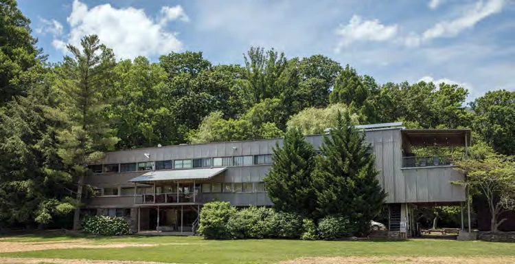

見るポイント
横に連なる窓と、斜面に沿って足元が開いたところを見てみましょう。教員と学生が手を動かして建てる計画で、設計した四つの棟のうち一棟が実現しました。写真は完成から約76年後の姿です。
作品・制作の例4件を紹介しています。実作品画像1点、参照・関連画像0点。画像の収集は継続中です。
学校・共同生活を通じた教育の実践
Black Mountain College
ブラック・マウンテン・カレッジは、米国にあった小さな大学です。芸術を特別な人だけのものにせず、学びの中心に置きました。授業、共同生活、ものをつくる実験が結びついていました。
実作品を見る

画像を表示できませんでした。下の出典ページで確認できます。
設計 A・ローレンス・コッハー（A. Lawrence Kocher）、施工に教員・学生が参加 / 1940–1941年
建築（外観の記録写真） ／ 建物の所在地は米国ノースカロライナ州レイク・イーデン。写真は米国議会図書館版画・写真部門所蔵（LC-DIG-highsm-43402）。
横に連なる窓と、斜面に沿って足元が開いたところを見てみましょう。教員と学生が手を動かして建てる計画で、設計した四つの棟のうち一棟が実現しました。写真は完成から約76年後の姿です。
同校の共同制作を伝える代表的な建築。州がまとめた歴史地区の登録資料で、学校時代に建てられた主要な建物として設計と建設の経緯が記録されています。
撮影 Carol M. Highsmith、2017年6月3日。Photographs in Carol M. Highsmith’s America Project in the Carol M. Highsmith Archive, Library of Congress, Prints and Photographs Division, LC-DIG-highsm-43402.
出典で作品・資料を見る ↗写真はパブリックドメイン（米国議会図書館）。
1941年完成の米国の建物の外観。米国著作権局は、1990年12月1日より前に建設された建物の設計は建築著作物の保護対象外と説明しています。設計図を転載したものではありません。
米国議会図書館の個別記録は『公表に際し既知の制限なし』、同館のハイスミス・アーカイブ記録は写真をパブリックドメインとしています。
元写真は米国議会図書館 LC-DIG-highsm-43402。ここには、公園史の教育冊子に同じ資料番号で掲載された写真を使用しました。
出典先の原画像を開く ↗作品・図版の関連資料 ↗画像の利用条件 ↗画面表示用に大きさを調整しています。
建築（外観の記録写真）
横に連なる窓と、斜面に沿って足元が開いたところを見てみましょう。教員と学生が手を動かして建てる計画で、設計した四つの棟のうち一棟が実現しました。写真は完成から約76年後の姿です。
作品・資料の出典を見る ↗原題：Studies Building, Black Mountain College
設計 A・ローレンス・コッハー（A. Lawrence Kocher）、施工に教員・学生が参加 / 1940–1941年 / 建築（外観の記録写真）
ドローイング
在任期の教員による制作を知る比較例。学校の学生課題とは区別する。
作品・資料の出典を見る ↗作品名（出典表記）：Study for To Monte Alban（《モンテ・アルバンへ》のための習作）
Josef Albers（ヨゼフ・アルバース） / 1941 / ドローイング
共同制作・建築実験
失敗も含めて材料や構造を学んだ共同制作の例。1949年の別のドームと分ける。
作品・資料の出典を見る ↗作品名（出典表記）：Supine Dome（立ち上がらなかったドーム）の実験
R. Buckminster Fuller（バックミンスター・フラー）と学生・教員ら / 1948 / 共同制作・建築実験
共同上演
音楽・詩・踊り・美術が出会った実践。ひとりの作者による固定した物体ではない。
作品・資料の出典を見る ↗作品名（出典表記）：Theater Piece No. 1（シアター・ピース第1番）
John Cage（ジョン・ケージ）ら。
参加：David Tudor（デイヴィッド・チューダー）、M. C. Richards（M・C・リチャーズ）、Charles Olson（チャールズ・オルソン）、Merce Cunningham（マース・カニングハム）、Robert Rauschenberg（ロバート・ラウシェンバーグ）ほか / 1952 / 共同上演
1933年に始まり、ドイツのバウハウスから来たヨゼフ・アルバースやアニ・アルバースも教えました。時期によって先生や活動は変わりました。音楽、詩、踊り、絵、建築などが出会ったからといって、全員が同じ方法でつくったわけではありません。
ひとつの決まった配色はありません。教員の作品、授業の記録、学生の制作を分けて見ます。
学校の名前と、そこで生まれた出版物や作品の作者を混同しないようにします。
1948年のドーム実験は、うまく立ち上がりませんでした。完成した名作だけでなく、つくって確かめる過程も学びでした。
1952年の共同上演では、音楽や詩、踊りが同じ場に集まりました。一枚の絵と違い、時間の流れや観客の場所が関わります。
ニュー・バウハウスとは、別の場所にできた別の学校です。バウハウス出身者とのつながりはあっても、同じ学校の米国支部だったわけではありません。
音をつくる人、動く人、絵を描く人で、一つの短い発表を考えてみましょう。分担をこえて相談すると、どんな発見があるでしょうか。
ここに挙げた作品は、考え方やつくり方の違いを比べるための例です。この分野の全地域・全時代を網羅するものではありません。
作品・制作の例4件を紹介しています。実作品画像1点、参照・関連画像0点。画像の収集は継続中です。